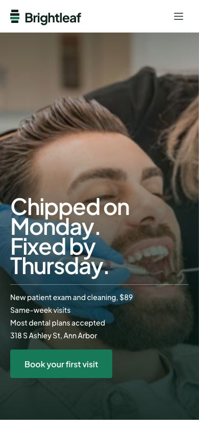

01Empfehlung
Brightleaf Dental
Zahnarztpraxis · Framer-Vorlage „Molar“
- Eine Schrift, eine Farbe, ein Gedanke: Plus Jakarta Sans auf Weiß, ein ruhiges Praxisgrün, Mint als einzige Fläche. Wirkt sicher, nicht steril.
- Alles da und in Patientensprache: Einstieg mit Faktenzeile (Erstbesuch 89 $, Termine in derselben Woche, Kassen, Adresse), fünf Leistungen als große Liste mit „klingt das nach dir?“, erster Termin als Zeitleiste 0:00 bis 0:55, Kennzahlen, Team mit Schwerpunkt, ein großes Zitat, Preise, FAQ mit Namen der Rezeption, Adresse mit Parken und Sprechzeiten, Fuß mit Notfall-Satz und Riesen-Wortmarke.
- Handy fast vorbildlich: Faktenzeile wird zur Liste, Zeitleiste bleibt lesbar, Preise rechtsbündig.
- Einstieg lebt von einem großen Vollbild-Foto mit weißer Schrift. Mit einem dunklen Handyfoto vom Behandlungsstuhl kippt das. Ecken 4 px, Fließtext 14 px grau: für ältere Patienten zu klein und zu hart.
Ganzes10
Abdeckung10
Handy9
Schwache Fotos6
Branchen-Mix9
Barrierearm8
Summe /6052

Erste 5 SekundenSatz auf Foto, darunter vier Fakten und ein grüner Knopf. Man weiß in drei Sekunden: was, was es kostet, wo. Bei uns: „Zahnarztpraxis in Findorff. Alle Kassen.“
Ansicht gekürzt, ganze Seite in anker/